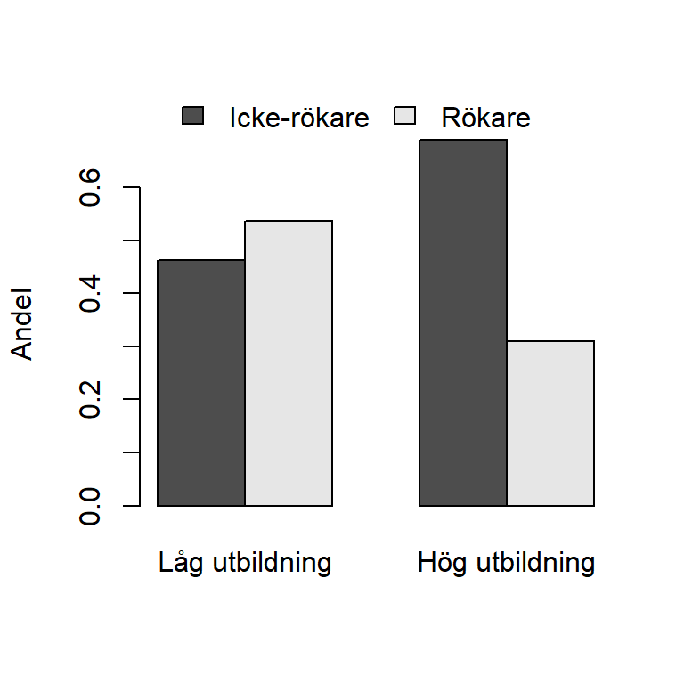

Kapitel 5 Binära variabler
En nödvändig färdighet vid arbete med data är att kunna hantera och analysera kategorivariabler. Vi börjar i detta kapitel med det enkla fallet binära variabler för att i ett senare kapitel övergå till att studera hur man arbetar med variabler som har fler än två kategorier.
5.1 Deskription av en binär variabel
Detta avsnitt fokuserar på analys av binära kategorivariabler. I princip alla datamaterial innehåller variabler med två kategorier och även om data inledningsvis inte innehåller binära variabler är det vanligt att av olika skäl omkoda kvantitativa variabler till variabler med två kategorier. För nybörjaren kan det vara förvirrande att det finns åtminstone två alternativ, som bägge är viktiga, för hur man arbetar med binära variabler.
- Alternativ 1. En binär kategorivariabel hanteras som en numerisk variabel efter att kategorierna tilldelats numeriska värden. Exempelvis kan vi ange att värdena 0 och 1 representerar två kategorier. Observera att val värden påverkar hur variabeln används i analysen.
- Alternativ 2. En binär kategoriabel definieras med funktionen factor()som datatypen faktor. En faktors kategorier benämns i R för levels (nivåer). Fördelen med att definiera en variabel som faktor är att R kan använda information om den binära variabeln i analyser och resultat. Till exempel kan kategoriernas namn presenteras i resultat. Dessutom kräver en del metoder i R en faktor-variabel. Observera att det, av förklarliga skäl, inte går att utföra räkneoperationer på variabler definierade som datatypen faktor.
Eftersom bägge varianterna har för- och nackdelar återfinns ofta bägge varianter av kodning för en och samma binära variabel i ett dataset — en numerisk version kodad 0-1 kallad för variabelnamn_bin och version kodad som faktor kallad variabelnamn_cat.
Oavsett om en binär variabel har kategorier som inte går att rangordna (till exempel variabeln \(kön\) med kategorierna \(kvinna\) och \(man\)) eller har kategorier som går att rangordna (till exempel \(utbildning\) med kategorierna \(låg\) och \(hög\)) beskrivs en binär variabel på samma sätt. Vi ska nu presentera visa hur man beskriver en binär variabel, utifrån de tidigare två nämnda alternativen.
Vi exemplifierar med att beskriva variabel som heter \(education\) som har två kategorier, \(low\) och \(high\) och som vi läser in nedan. Med kommandot str() identifieras att education är en variabel med datatypen character. Det är alltid viktigt att undersöka variablers datatyp, emellertid är detta ingen kod som sedan sparas i scriptet. Efter datatypen är undersökt kan denna rad med kod tas bort från scriptet.
# Ursprungsvariabel
education <- c("high", "high", "low", "high", "high", "low", "high", "low",
"low", "high", "high", "high", "high", "high", "high", "low",
"high", "high", "high", "high", "high", "high", "high", "high",
"high", "low", "high", "high", "high", "low", "high", "high",
"low", "high", "high", "high", "low", "low", "high", "low",
"high", "high", "low", "high", "high", "low", "high", "low",
"low", "high", "high", "high", "high", "high", "high", "low",
"high", "high", "high", "high", "high", "high", "high", "high",
"high", "low", "high", "high", "high", "low", "high", "high",
"low", "high", "high", "high", "low", "low", "high", "low",
"low","low","low","low","low","low","low","low","low","low",
"low","low","low","low","low","low","low","low","low","low",
"low","low","low","low","low","low","low","low","low","low",
"low","low","low","low","low","low","low","low","low","low",
"low","low","low","low","low","low","low","low","low","low",
"low","low","low","low","low","low","low","low","low","low",
"high", "high", "low", "high", "high", "low", "high", "low",
"low", "high", "high", "high", "high", "high", "high", "low",
"high", "high", "high", "high", "high", "high", "high", "high",
"high", "low", "high", "high", "high", "low", "high", "high",
"low", "high", "high", "high", "low", "low", "high", "low",
"high", "high", "low", "high", "high", "low", "high", "low",
"low", "high", "high", "high", "high", "high", "high", "low",
"high", "high", "high", "high", "high", "high", "high", "high",
"high", "low", "high", "high", "high", "low", "high", "high",
"low", "high", "high", "high", "low", "low", "high", "low",
"low","low","low","low","low","low","low","low","low","low",
"low","low","low","low","low","low","low","low","low","low",
"low","low","low","low","low","low","low","low","low","low",
"low","low","low","low","low","low","low","low","low","low",
"low","low","low","low","low","low","low","low","low","low",
"low","low","low","low","low","low","low","low","low","low")
str(education)
> chr [1:280] "high" "high" "low" "high" "high" "low" "high" "low" ...Med Alternativ 1 tilldelas de två kategorierna i den binära variabeln numeriska värden och variabeln analyseras sedan som en numerisk variabel. Det är vanligast att ge kategorierna värdena 0 och 1. En anledning är tolkningen blir i termer av andelar av den kategori som är kodad 1.
Exemplet nedan illustrerar hur man med det numeriska alternativet kan beskriva den ursprungliga variabeln \(education\) som har kategorierna \(low\) och \(high\). Den uppenbara fördelen med att kodningen 0-1, jämfört med 1-2, är att 0-1 ger en bekväm tolkning eftersom medelvärdet då är proportionen.
Kommandot str() identifierar nu att både edu_bin och edu_12 är av typen numeric.
Med mean() och summary() erhålls information som beskriver edu_bin och edu_12. Vi ser att 41% har hög utbildning. Däremot ser vi inte hur många som har låg respektive hög utbildning.
# Numerisk kodning: 0 = low, 1 = high
edu_bin <- rep(NA, length(education))
edu_bin[education == "high"] <- 1
edu_bin[education == "low"] <- 0
str(edu_bin)
> num [1:280] 1 1 0 1 1 0 1 0 0 1 ...
mean(edu_bin)
> [1] 0.4142857
summary(edu_bin)
> Min. 1st Qu. Median Mean 3rd Qu. Max.
> 0.0000 0.0000 0.0000 0.4143 1.0000 1.0000
# Numerisk kodning: 1 = low, 2 = high
edu_12 <- rep(NA, length(education))
edu_12[education == "high"] <- 2
edu_12[education == "low"] <- 1
str(edu_12)
> num [1:280] 2 2 1 2 2 1 2 1 1 2 ...
mean(edu_bin)
> [1] 0.4142857
summary(edu_bin)
> Min. 1st Qu. Median Mean 3rd Qu. Max.
> 0.0000 0.0000 0.0000 0.4143 1.0000 1.0000Med Alternativ 2 används funktionen factor() för skapa en faktorvariabel edu_cat
Kommandot str() identifierar nu att edu_cat har två nivåer med kategorinamnen
“low” and “high”. R tilldelar automatiskt kategorierna nivåer, där “high” är level 1 och “low” är level 2. Observera att nivåer används för att bestämma en rangordning och kan inte användas i aritmetiska beräkningar. Även om valet av nominal- eller ordinalskala i teorin saknar betydelse för en binär variabel är det viktigt att veta ordningen på nivåerna om man hanterar variabeln som en faktor.Det finns nämligen analyser i R där ordningen spelar roll. Nivåerna bestäms utifrån den ordning kategorierna dyker upp i variabeln såvida inte en numerisk variabel görs om till en faktor.
Faktorvariabeln kan beskrivas med summary() som redovisar antalet inom respektive utbildningskategori. Däremot kan vi inte använda mean() och därmed inte fram andelen med denna funktion.
Det går att i funktionen factor() använda argumentet levels för att manuellt ange nivåerna. Dessutom kan det i detta exempel uppfattas som förvirrande för användaren att “high” har tilldelats nivå 1 medan “low” är nivå 2. Av dessa skäl ändras därför ordningen med hjälp av argumentet levels.
Vid arbete med faktorer används ofta en funktion (ej att förväxla med argumententet levels() för att ändra kategorinamn.I exemplet nedan används denna funktion för att ändra kategorinamn på \(edu_cat\). Koden för att ändra namn är inte uppenbar för nybörjaren och det är enklast om du kopierar koden nedan och ändrar den efter dina behov.
# Skapa en faktorvariabel
edu_cat <- factor(education)
str(edu_cat)
> Factor w/ 2 levels "high","low": 1 1 2 1 1 2 1 2 2 1 ...
mean(edu_cat)
> Warning in mean.default(edu_cat): argument is not numeric or logical:
> returning NA
> [1] NA
summary(edu_cat)
> high low
> 116 164
# Test att utföra en räkneoperation på en faktorvariabel
mean(edu_cat)
> Warning in mean.default(edu_cat): argument is not numeric or logical:
> returning NA
> [1] NA
# Ändra ordningen på nivåerna
edu_cat <- factor(education, levels = c("low", "high"))
str(edu_cat)
> Factor w/ 2 levels "low","high": 2 2 1 2 2 1 2 1 1 2 ...
summary(edu_cat)
> low high
> 164 116
# Ändra för valt element namn i vektor levels(education_cat)
levels(edu_cat)[levels(edu_cat) == "low"] <- "Låg utbildning"
levels(edu_cat)[levels(edu_cat) == "high"] <- "Hög utbildning"
edu_cat
> [1] Hög utbildning Hög utbildning Låg utbildning Hög utbildning
> [5] Hög utbildning Låg utbildning Hög utbildning Låg utbildning
> [9] Låg utbildning Hög utbildning Hög utbildning Hög utbildning
> [13] Hög utbildning Hög utbildning Hög utbildning Låg utbildning
> [17] Hög utbildning Hög utbildning Hög utbildning Hög utbildning
> [21] Hög utbildning Hög utbildning Hög utbildning Hög utbildning
> [25] Hög utbildning Låg utbildning Hög utbildning Hög utbildning
> [29] Hög utbildning Låg utbildning Hög utbildning Hög utbildning
> [33] Låg utbildning Hög utbildning Hög utbildning Hög utbildning
> [37] Låg utbildning Låg utbildning Hög utbildning Låg utbildning
> [41] Hög utbildning Hög utbildning Låg utbildning Hög utbildning
> [45] Hög utbildning Låg utbildning Hög utbildning Låg utbildning
> [49] Låg utbildning Hög utbildning Hög utbildning Hög utbildning
> [53] Hög utbildning Hög utbildning Hög utbildning Låg utbildning
> [57] Hög utbildning Hög utbildning Hög utbildning Hög utbildning
> [61] Hög utbildning Hög utbildning Hög utbildning Hög utbildning
> [65] Hög utbildning Låg utbildning Hög utbildning Hög utbildning
> [69] Hög utbildning Låg utbildning Hög utbildning Hög utbildning
> [73] Låg utbildning Hög utbildning Hög utbildning Hög utbildning
> [77] Låg utbildning Låg utbildning Hög utbildning Låg utbildning
> [81] Låg utbildning Låg utbildning Låg utbildning Låg utbildning
> [85] Låg utbildning Låg utbildning Låg utbildning Låg utbildning
> [89] Låg utbildning Låg utbildning Låg utbildning Låg utbildning
> [93] Låg utbildning Låg utbildning Låg utbildning Låg utbildning
> [97] Låg utbildning Låg utbildning Låg utbildning Låg utbildning
> [101] Låg utbildning Låg utbildning Låg utbildning Låg utbildning
> [105] Låg utbildning Låg utbildning Låg utbildning Låg utbildning
> [109] Låg utbildning Låg utbildning Låg utbildning Låg utbildning
> [113] Låg utbildning Låg utbildning Låg utbildning Låg utbildning
> [117] Låg utbildning Låg utbildning Låg utbildning Låg utbildning
> [121] Låg utbildning Låg utbildning Låg utbildning Låg utbildning
> [125] Låg utbildning Låg utbildning Låg utbildning Låg utbildning
> [129] Låg utbildning Låg utbildning Låg utbildning Låg utbildning
> [133] Låg utbildning Låg utbildning Låg utbildning Låg utbildning
> [137] Låg utbildning Låg utbildning Låg utbildning Låg utbildning
> [141] Hög utbildning Hög utbildning Låg utbildning Hög utbildning
> [145] Hög utbildning Låg utbildning Hög utbildning Låg utbildning
> [149] Låg utbildning Hög utbildning Hög utbildning Hög utbildning
> [153] Hög utbildning Hög utbildning Hög utbildning Låg utbildning
> [157] Hög utbildning Hög utbildning Hög utbildning Hög utbildning
> [161] Hög utbildning Hög utbildning Hög utbildning Hög utbildning
> [165] Hög utbildning Låg utbildning Hög utbildning Hög utbildning
> [169] Hög utbildning Låg utbildning Hög utbildning Hög utbildning
> [173] Låg utbildning Hög utbildning Hög utbildning Hög utbildning
> [177] Låg utbildning Låg utbildning Hög utbildning Låg utbildning
> [181] Hög utbildning Hög utbildning Låg utbildning Hög utbildning
> [185] Hög utbildning Låg utbildning Hög utbildning Låg utbildning
> [189] Låg utbildning Hög utbildning Hög utbildning Hög utbildning
> [193] Hög utbildning Hög utbildning Hög utbildning Låg utbildning
> [197] Hög utbildning Hög utbildning Hög utbildning Hög utbildning
> [201] Hög utbildning Hög utbildning Hög utbildning Hög utbildning
> [205] Hög utbildning Låg utbildning Hög utbildning Hög utbildning
> [209] Hög utbildning Låg utbildning Hög utbildning Hög utbildning
> [213] Låg utbildning Hög utbildning Hög utbildning Hög utbildning
> [217] Låg utbildning Låg utbildning Hög utbildning Låg utbildning
> [221] Låg utbildning Låg utbildning Låg utbildning Låg utbildning
> [225] Låg utbildning Låg utbildning Låg utbildning Låg utbildning
> [229] Låg utbildning Låg utbildning Låg utbildning Låg utbildning
> [233] Låg utbildning Låg utbildning Låg utbildning Låg utbildning
> [237] Låg utbildning Låg utbildning Låg utbildning Låg utbildning
> [241] Låg utbildning Låg utbildning Låg utbildning Låg utbildning
> [245] Låg utbildning Låg utbildning Låg utbildning Låg utbildning
> [249] Låg utbildning Låg utbildning Låg utbildning Låg utbildning
> [253] Låg utbildning Låg utbildning Låg utbildning Låg utbildning
> [257] Låg utbildning Låg utbildning Låg utbildning Låg utbildning
> [261] Låg utbildning Låg utbildning Låg utbildning Låg utbildning
> [265] Låg utbildning Låg utbildning Låg utbildning Låg utbildning
> [269] Låg utbildning Låg utbildning Låg utbildning Låg utbildning
> [273] Låg utbildning Låg utbildning Låg utbildning Låg utbildning
> [277] Låg utbildning Låg utbildning Låg utbildning Låg utbildning
> Levels: Låg utbildning Hög utbildningAvslutningsvis ska vi på betydelsen av bortfall. I exemplet nedan skapas bortfall genom att på några ställen lägga bortfall kodat NA för observation 3 och 10. Vi ser att med summary() hanteras bortfallet i bägge fallen, men med mean() måste argumentet na.rm användas.
# Skapa en variabel med missing data (NA) i element 3, 10 i den numeriska
# variabeln edu_bin och genomför samma analys som förut
edu_bin_mis <- edu_bin
edu_bin_mis[3] <- NA
edu_bin_mis[10] <- NA
mean(edu_bin_mis)
> [1] NA
mean(edu_bin_mis, na.rm = TRUE)
> [1] 0.4136691
summary(edu_bin_mis)
> Min. 1st Qu. Median Mean 3rd Qu. Max. NA's
> 0.0000 0.0000 0.0000 0.4137 1.0000 1.0000 2
# Skapa en variabel med missing data (NA) i element 3, 10 i faktor-variabeln
# edu_cat och genomför samma analys som förut
edu_cat_mis <- edu_cat
edu_cat_mis[3] <- NA
edu_cat_mis[10] <- NA
summary(edu_cat_mis)
> Låg utbildning Hög utbildning NA's
> 163 115 25.2 Tabeller och en binär variabel
Tabeller och kategorivariabler är starkt relaterade och vi ska nu se hur man kan redovisa en binär variabel med hjälp av funktionen table(), som är en grundläggande funktion för att skapa tabeller. Denna funktion hanterar både en och flera variabler med olika antal kategorier. Vi börjar med att använda table() på de tidigare skapade binära variablerna.
Vi kan se att table() ger frekvenser för både numeriska variabler och på faktorvariabler. Det gäller dock att vara uppmärksam på bortfall när table() och för att presentera frekvenser även för bortfall används argumentet useNA.
table(edu_bin)
> edu_bin
> 0 1
> 164 116
table(edu_cat)
> edu_cat
> Låg utbildning Hög utbildning
> 164 116
table(edu_bin_mis)
> edu_bin_mis
> 0 1
> 163 115
table(edu_bin_mis, useNA = "ifany")
> edu_bin_mis
> 0 1 <NA>
> 163 115 2
table(edu_cat_mis)
> edu_cat_mis
> Låg utbildning Hög utbildning
> 163 115
table(edu_cat_mis, useNA = "ifany")
> edu_cat_mis
> Låg utbildning Hög utbildning <NA>
> 163 115 2Varför vill man då använda table()? Genom att skapa ett tabell-objekt erhålls en flexibilitet genom att funktioner anpassade för tabeller kan användas. En viktig sådan funktion är prop.table() som beräknar andelar (relativa frekvenser, proportioner) baserat på tabellobjektets frekvenser.
I exemplet nedan skapar vi med tabell-objekt med frekvenser, sedan tillämpar vi prop.table() för att få fram andelarna, som är 0.414 respektive 0.586 för respektive utbildningsnivå.
Genom att använda str() ser vi bägge objekten är tabell-objekt.
> # Skapa tabell-objekt med frekvenser från tabell-objektetet
> freq_table_edu_cat <- table(edu_cat)
> freq_table_edu_cat
> edu_cat
> Låg utbildning Hög utbildning
> 164 116
> str(freq_table_edu_cat)
> 'table' int [1:2(1d)] 164 116
> - attr(*, "dimnames")=List of 1
> ..$ edu_cat: chr [1:2] "Låg utbildning" "Hög utbildning"
>
> # Skapa tabell med andelar från tabell-objektetet
> prop_table_edu_cat <- prop.table(freq_table_edu_cat)
> prop_table_edu_cat
> edu_cat
> Låg utbildning Hög utbildning
> 0.5857143 0.4142857
> str(freq_table_edu_cat)
> 'table' int [1:2(1d)] 164 116
> - attr(*, "dimnames")=List of 1
> ..$ edu_cat: chr [1:2] "Låg utbildning" "Hög utbildning"Det är viktigt att beskriva både frekvenser och andelar. Ett kompakt sätt är att kombiinera tabell-objekten med cbind(). I exemplet nedan namnger vi sedan kolumnerna. Vi kan se att eftersom edu_cat redan har kategorierna namngivna behöver vi inte namnge raderna. Det är en fördel med att arbeta med faktor-variabler istället för numeriska variabler.
> # Kombinera frekvenser och andelar. Passa samtidigt på att avrunda till en decimal och göra om variabeln till procent.
> table_edu <- cbind(freq_table_edu_cat, round(100*prop_table_edu_cat, 1))
> # Ge tabellens kolumner namn
> colnames(table_edu) <- c("Frekvens", "Procent (%)")
> table_edu
> Frekvens Procent (%)
> Låg utbildning 164 58.6
> Hög utbildning 116 41.4Avslutningsvis kan det vara värt att notera att tabell-objekt ibland är svåra att arbeta med. En lösning om man hämta enskilda frekvenser från tabell-objekt är då konvertera tabellen till en data frame.
freq_table_edu_df <- data.frame(freq_table_edu_cat)
freq_table_edu_df
> edu_cat Freq
> 1 Låg utbildning 164
> 2 Hög utbildning 1165.3 Figurer och en binär variabel
Ett alternativ till tabeller är att använda sig av figurer. För att illustrera kategorivariabler används stapeldiagram som man i R konstruerar med funktionen barplot(). Använd inte cirkeldiagram för detta syfte. Det går att betrakta stapeldiagram som en grafisk representation av en tabell. Utgångspunkten när man arbetar med barplot() i R är därför ofta att först skapa ett tabell-objekt.
Nedan konstrueras två figurer, en baserad på tabell-objektet med frekvenser och en baserad på den med andelar. Observera att nedanstående är avsett att illustrera stapeldiagram och ett stapeldiagram tillför i fallet med en enda binär variabel ingen information. Det räcker nästan alltid med att istället bara ange numeriska värden.
Det du också ska uppmärksamma i exemplet är axlarna på ett tydligt sätt namngivna! Glöm inte ange axlarna!
par(mfrow = c(1, 2))
# stapeldiagram baserat på tabellen med frekvenser
barplot(freq_table_edu_cat,
ylab = "Antal",
col = c("brown1", "brown1"))
# stapeldiagram baserat på tabellen med andelar
barplot(prop_table_edu_cat,
ylab = "Procent (%)",
col = c("brown1", "brown1"))
5.4 Inferens för binär variabel
Antar att observationerna är dragna med ett OSU och att vi vill uttala om populationen. Antingen vill vi med viss säkerheter få en uppfattning om andelen i populationen, \(p\) eller så vill vi se i vilken utsträckning vårt data stämmer överens med hypotes om populationen. Huruvida urvalet är gjort med eller utan återlägning saknar praktisk betydelse då urvalsstorleken antas vara liten relativt populationsstorleken.
Vi börjar med att se hur vi kan konstruera ett konfidensintervall för andelen \(p\) i en stor population och givet OSU gäller följande:
- Stickprovsandelen \(\hat{p}\) är en väntevärdesriktig skattning av \(p\). Andelen beräknas med \(\hat{p}=\dfrac{k}{n}\) där \(n\) är antal försök (antalet observationer) och \(x\) är antalet lyckade försök (antalet 1or).
- Andelsestimatorns varians \[V(\hat{p}) = \dfrac{p(1-p)}{n}\] skattas med \[\hat{V}(\hat{p}) = \dfrac{\hat{p}(1-\hat{p})}{n} \]. I Triola (s. 300) skrivs \(1 - \hat{p} = \hat{q}\).
- För konfidensintervall krävs att samplingfördelningen är känd. Om \(np(1-p)>5\) är andelsestimatorn approximativt normalfördelad. Ett konfidensintervall ges då av \[ \hat{p}\pm z_{\alpha/2}\sqrt{\hat{V}(\hat{p})} \]
Anta att urvalet är från en stor population och vi vill skatta andelen högutbildade i populationen med ett tillhörande 95% konfidensintervall. I Triola (s. 330) skrivs felmarginalen \(E=z_{\alpha/2}\sqrt{\hat{V}(\hat{p})}\).
Anta nu observationerna i education är mätningar på individer dragna med OSU från en stor population. Vi vill skapa ett 95% konfidensintervall för andelen i populationen som har hög utbildning, \(p\). Genom att implementera ovanstående formler kan detta enkelt beräknas i R.
# Beräkna antalet lyckade försök (antal 1or)
x <- sum(edu_bin == 1)
# Beräkna antal försök (1or or 0r). Denna kodning gör att eventuella NA inte tas med i beräkningen av n
n <- sum(edu_bin == 1) + sum(edu_bin == 0)
# Skattning av andelen med hög utbildning. Det går även att använda mean(edu_bin)
phat <- x/n
# Skatta variansen
vphat <- phat*(1-phat)/n
# Välja konfidensgrad 100*(1-alpha)%
alpha <- 0.05
z_alpha <- qnorm((1-alpha/2))
LB <- phat - z_alpha*sqrt(vphat)
UB <- phat + z_alpha*sqrt(vphat)
p_KI <- c(LB, UB)
p_KI
[1] 0.3565876 0.4719839
# Undersöker förutsättningen
n*phat*(1-phat)
[1] 67.94286Vi skattar att 41.4% är högutbildade i populationen. Med 95% säkerhet är andelen högutbildade i populationen mellan 35.7% och 47.2%
Vi ska nu se på hur inferens kan göras i form av hypotesprövning. Givet samma förutsättningar som för skapandet av konfidensintervall ovan gäller följande:
- Vid hypotesprövning av \(H_0: p = p_{H_0}\) är under nollhypotesen
\[z = \dfrac{\hat{p} - p_{H_0}}{\sqrt{\dfrac{p_{H_0}(1-p_{H_0})}{n}}}\] approximativt \(N(0,1)\) om \(np(1-p)>5\).
Vi exemplifierar med utbildningsexemplet. Anta att vi vill undersöka det är rimligt att 40% i populationen har hög utbildning, men vi har ingen uppfattning om andelen högutbildade är färre eller fler. Vi sätter då upp hypoteserna \(H_0: p = 0.4\) vs \(H_0: p \neq 0.4\). Vi kan implementera ovanstående formel, beräkna observerat \(z\)-värde och se hur extremt det är i en standardnormalfördelning för att få fram \(p\)-värdet. Om vi önskar fatta ett beslut jämför vi sedan \(p\)-värdet mot en förvald signifikansnivå.
# p givet nollhypotesen
pH0 <- 0.4
# Variansen givet nollhypotesen
vpH0 <- pH0*(1-pH0)/n
# Teststatistika
zobs <- (phat - pH0)/sqrt(vpH0)
zobs
[1] 0.48795
# zobs pnorm ger vänstersvans-sannolikhet.
p_value <- 2*(1 - pnorm(zobs))
p_value
[1] 0.6255852Vi erhåller att \(p=\) 0.626. Tolkningen är att givet att andelen högutbildade i populationen skulle vara 40% är sannolikheten 0.63 att observera andelen som observeras eller mer extrem. Data stämmer alltså ganska väl överens med nollhypotesen. Ett beslut på 5% signifikansnivå innebär att vi inte kan förkasta nollhypotesen. Huruvida vi vill fatta ett beslut eller inte beror på målet för analysen.
Det finns dock en inbyggd funktion i R för att göra motsvarande analys, nämligen prop.test(). Vi ska nu se hur du kan använda denna funktion för att skapa ett konfidensintervall för andelen \(p\) i en stor population samt genomföra en hypotesprövning.
I funktionen prop.test() anges först antalet lyckade försök (1or) samt det totala antalet försök (1or och 0r). Med argumentet p anges nollhypotesen och med argumentet alternative specificeras mothypotesen. Argumentet conf.level anger konfidensgrad för konfidensintervallet. Slutligen bestämmer argumentet correct kontinuitetsskorrektion ska användas. Vi använder inte kontinuitetskorrektion på denna kurs och sätter denna till FALSE.
# Använd funktionen prop.test() för att skapa konfidensintervall utan korrigering
edu_analysis <- prop.test(x = x, n = n, p = 0.4, alternative = "two.sided", correct = FALSE)
edu_analysis
1-sample proportions test without continuity correction
data: x out of n, null probability 0.4
X-squared = 0.2381, df = 1, p-value = 0.6256
alternative hypothesis: true p is not equal to 0.4
95 percent confidence interval:
0.3581276 0.4727639
sample estimates:
p
0.4142857 Vi börjar med att se på resultatet från hypotesprövningen och upptäcker exakt samma \(p\)-värde som förut! Vårt tidigare observerade \(z\)-värde, 0.488 erhålls genom att ta roten ur 0.2380952.
Vidare är konfidensintervallet mycket likt det tidigare framräknade intervallet. De överensstämmer dock inte exakt, vilket beror på att R använder en annan formel för konfidensintervallet som har något bättre egenskaper om andelen är nära 0 eller 1 och stickprovet är litet.
Fördelen med normalapproximationen är pedagogisk, dvs samma formler återkommer senare på kursen.

Inferens när \(p\) är nära 0 eller 1
- Om andelen i populationen är nära 0 eller 1 krävs stort stickprov för att inferensen ska bli korrekt! Visserligen har vi tumregeln \(np(1-p)>5\), men om andelen i populationen är mycket nära 0 eller 1 fungerar denna tumregel inte väl om inte stickprovsstorleken är stor.
Beträffande konfidensintervall är då Wilson score interval, som R använder i prop.test, ett något bättre alternativ än den formeln som vi använder. I de absolut flesta fall har det inget betydelse om vi väljer prop.test() eller intervallet som baseras på normalapproximation (vilket vi såg eftersom intervallen var så lika).
För hypotesprövning finns alternativet att använda ett så kallat exakt binomial-test. Detta test introduceras emellertid inte här utan vi hänvisar till funktionen binom.test() och tillhörande dokumentation.
Var som sagt uppmärksam om andelen är nära 0 eller nära 1!
Testa med följande app!

\(\chi^2\)-test och test av \(p\)
- I prop.test() används \(\chi^2\)-test för test av andelar. \(\chi^2\)-testet är nämligen direkt relaterat till det \(z\)-test som vi använder vid test av andelar (vilket vi såg när vi förut tog roten ur \(\chi^2\)-värdet!). Problemet med test av \(p\) kan nämligen formuleras utifrån observerade frekvenser (\(116\) 1or och \(164\) 0or) och under nollhypotesen förväntade frekvenser (\(np_{H_0}=112\) 1or och \(n(1-p_{H_0})=168\) 0r). Vi illusterar i en tabell:
| 1or | 0or |
|---|---|
| 116 (112) | 164 (168) |
Formeln för \(\chi^2\)-testet går det sedan att tillämpa \[\chi^2 = \sum \dfrac{(O_i-E_i)^2}{E_i} = \dfrac{(116-112)^2}{112} + \dfrac{(164-168)^2}{168}=0.2381\] vilket i detta fall jämförs med en \(\chi^2\)-fördelning med 1 frihetsgrad. Notera att mothypotesen vid \(\chi^2\)-testet alltid är två-sidig.
5.5 Deskription av två binära variabler
När vi har två binära variabler finns fler möjligheter för dessa ska analyseras. Man kan välja att analysera dem var för sig eller så vill man peka hur variablerna är relaterade till varandra. För att göra två binära variabler
5.6 Tabeller och två binära variabler
Även om funktionen table() kan användas vid analys av en enda variabel, så är den framför allt användbar för att skapa korstabeller, dvs analys av två kategorivariabler samtidigt. I table() anges variabeln som ska finnas på raden först, sedan variabeln redovisas. Tabellen som erhålls kallas i fallet med två variabler för tvåvägs-korstabell. Om det går att översätta variablerna i termer av oberoende variabel och beroende variabel, sätts den oberoende variabeln i regel kolumnsvis (x-axel) och den beroende variabeln radvis (y-axel).
Vi exemplifierar nedan med R-kod och vi ska nu beskriva sambandet mellan utbildningsnivå och rökning. Först skapas en korstabell med frekvenser och baserat på denna skapas en korstabell med relativa frekvenser baserat på kolumnprocent. Notera att det kräver en del pusslande, men i gengäld erhålls stor flexibilitet vad gäller den slutliga utformningen av tabellen.
Vi börjar med att skapa en rudimentär korstabell som anger frekvenserna i de fyra cellerna.
# Skapa en variabel smoker som är 1 om rökare och 0 om icke-rökare
smoker <- c(0, 0, 1, 0, 0, 0, 0, 0, 1, 0, 1, 0, 0, 0, 0, 0, 0, 0, 0, 1,
0, 1, 1, 0, 1, 0, 1, 0, 1, 0, 1, 0, 0, 0, 0, 0, 0, 0, 0, 1,
0, 1, 0, 0, 1, 0, 0, 0, 1, 0, 1, 0, 0, 0, 0, 0, 0, 0, 0, 1,
0, 1, 1, 0, 1, 0, 1, 0, 1, 0, 1, 0, 0, 0, 0, 0, 0, 0, 0, 1,
1,1,0,0,1,1,0,0,1,1,1,1,0,0,1,1,1,1,1,1,1,1,1,1,1,1,1,0,0,0,1,1,1,1,0,0,1,
1,1,1,1,0,0,0,1,0,1,0,1,1,0,0,0,1,1,1,1,0,0,1, 0, 0, 1, 0, 0, 0, 0, 0, 1, 0,
1, 0, 0, 0, 0, 0, 0, 0, 0, 1, 0, 1, 1, 0, 1, 0, 1, 0, 1, 0, 1, 0, 0, 0, 0, 0, 0, 0, 0, 1,
0, 1, 0, 0, 1, 0, 0, 0, 1, 0, 1, 0, 0, 0, 0, 0, 0, 0, 0, 1,
0, 1, 1, 0, 1, 0, 1, 0, 1, 0, 1, 0, 0, 0, 0, 0, 0, 0, 0, 1,
1,1,0,0,1,1,0,0,1,1,1,1,0,0,1,1,1,1,1,1,1,1,1,1,1,1,1,0,0,0,1,1,1,1,0,0,1,
1,1,1,1,0,0,0,1,0,1,0,1,1,0,0,0,1,1,1,1,0,0,1)
# Korstabulering av edu_bin och smoker (rökning radvis och utbildning kolumnvis)
freq_table_edu_smoke <- table(smoker, edu_bin)
freq_table_edu_smoke
> edu_bin
> smoker 0 1
> 0 76 80
> 1 88 36För att använda tabellen måste den emellertid modifieras. Dels måste rader och kolumner tydligare namnges så att inga missförstånd uppstår vad gäller tolkning, dels måste sambandet tydliggöras om detta är målet för analys. Det är nämligen svårt att beskriva samband med enbart frekvenser, därför måste vi på ett lämpligt sätt ange andelar (procent). Precis som tidigare används därför funktionen prop.table() på ett objekt från table(). Eftersom vi nu har en två-vägs kortstabell ger prop.table() tre möjligheter att beräkna andelar:
- Andelar baserade på totala antalet (default)
- Andelar beräknade utifrån radvisa totaler i nämnarna, genom att sätta argumentet margin = 1
- Andelar baserade på kolumnvisa totaler i nämnarna, genom sätta argumentet margin = 2.
Notera att det är mycket viktigt att välja rätt andelar att beräkna eftersom dessa styr tolkningen av resultaten. Vi illustrerar nu hur andelarna beräknas i R och tolkar dem sen.
# Andelar baserat alla
table_all <- prop.table(freq_table_edu_smoke)
table_all
> edu_bin
> smoker 0 1
> 0 0.2714286 0.2857143
> 1 0.3142857 0.1285714
# Andelar baserat rader
table_row_prop <- prop.table(freq_table_edu_smoke, margin = 1)
table_row_prop
> edu_bin
> smoker 0 1
> 0 0.4871795 0.5128205
> 1 0.7096774 0.2903226
# Andelar baserat kolumner
table_column_prop <- prop.table(freq_table_edu_smoke, margin = 2)
table_column_prop
> edu_bin
> smoker 0 1
> 0 0.4634146 0.6896552
> 1 0.5365854 0.3103448Spendera tid med att tolka vad de olika tabellerna säger!
För att förenkla resonemangen beskriver vi sambanden i termer av sannolikheter.
- Den första tabellen visar att av alla i undersökningen är 27.1% icke-rökare och har låg utbildning. Om urvalet är slumpmässigt är detta således en skattning av sannolikheten \(\Pr(\text{Icke-rökare}\,\, \& \,\, \text{Låg utbildning})\). På motsvarande sätt är 28.6%, 31.4% och 12.9% skattningar av \(\Pr(\text{Icke-rökare}\,\, \& \,\, \text{Hög utbildning})\), \(\Pr(\text{Rökare}\,\, \& \,\, \text{Låg utbildning})\) och \(\Pr(\text{Rökare}\,\, \& \,\, \text{Hög utbildning})\). Huruvida dessa skattningar är relevanta beror på syftet med undersökningen, men oftast är det mer relevant att skatta de betingade sannolikheter och sedan jämföra dessa.
- Den andra tabellen visar, genom att beräkna radprocent, att bland icke-rökarna har 48.7% låg utbildning. Det innebär naturligtvis att bland icke-rökarna har 51.3% hög utbildning. Om urvalet är slumpmässigt är dessa skattningar av \(\Pr(\text{Låg utbildning}|\text{Icke-rökare})\) och \(\Pr(\text{Hög utbildning}|\text{Icke-rökare})\). På motsvarande sätt har 71% låg utbildning respektive 29% hög utbildning bland rökarna. \(\Pr(\text{Låg utbildning}|\text{Rökare})\) och \(\Pr(\text{Hög utbildning}|\text{Rökare})\). Vi kan alltså med denna analys jämföra utbildningsnivån bland icke-rökare och rökare.
- Den tredje tabellen visar, genom att beräkna kolumnprocent, att bland de lågutbildade röker 53.7% medan bland de högutbildade röker 31%. Detta är således skattningar av \(\Pr(\text{Rökare} | \text{Låg utbildning})\) respektive \(\Pr(\text{Rökare} | \text{Hög utbildning})\). På motsvarande sätt är 46.3% och 69% skattningar av \(\Pr(\text{Icke-rökare}|\text{Låg utbildning})\) och \(\Pr(\text{Icke-rökare}|\text{Hög utbildning})\). Vi kan konstatera att i stickprovet är andelen rökare större bland lågutbildade än högutbildade.
Vilken tabell vi väljer att redovisa beror således på frågeställningen. Om vi tänker oss att vi vill studera om utbildning påverkar benägenheten att röka, vilket förmodligen är den frågan som ställs, så är den tredje tabellen den som ska redovisas. Det är då enkelt att jämföra andelarna som röker i respektive utbildningskategori.
Vi konstruerar därför en korstabell som på beskriver sambandet i den tredje varianten och som, för fullständighets skull, innehåller både frekvenser och andelar. Tabellen konstrueras på motsvarande sätt som när vi konstruerade en tabell med en enda binär variabel.
# Skapa tabell för presentation av analys
table_edu_smoke <- cbind(freq_table_edu_smoke[,1], round(100*table_column_prop[,1], 1),
freq_table_edu_smoke[,2], round(100*table_column_prop[,2], 1))
colnames( table_edu_smoke ) <- c("Låg (n)", "Låg (%)", "Hög (n)", "Låg (%)")
rownames( table_edu_smoke ) <- c("Icke-rökare", "Rökare")
table_edu_smoke
> Låg (n) Låg (%) Hög (n) Låg (%)
> Icke-rökare 76 46.3 80 69
> Rökare 88 53.7 36 31Avslutningsvis, för fullständighetens skull, använder vi funktionen addmargins() på tabellobjektet för att addera marginalsummor till tabellen. Genom att anges 1 är det kolumnsvisa summor, men det går att för andra tabeller använda 2 eller inte för att addera radvis eller både kolumner och rader.
Nu är vi klara med tabellen! Det som återstår är att exportera den till ett ordbehandlingsprogram eller ett bildspel, men detta beskrivs i ett senare avsnitt.
table_edu_smoke_final <- addmargins(table_edu_smoke, 1)
rownames( table_edu_smoke_final ) <- c("Icke-rökare", "Rökare", "Summa")
table_edu_smoke_final
> Låg (n) Låg (%) Hög (n) Låg (%)
> Icke-rökare 76 46.3 80 69
> Rökare 88 53.7 36 31
> Summa 164 100.0 116 1005.7 Kvantifiering av samband mellan två binära variabler
Från tabellen kan vi välja att kvantifiera sambandet mellan två binär variabler med olika mått (även kallat effektstorlekar) och de tre vanligaste måtten är:
- Skillnaden i andelar: \[p_{diff} = \Pr(Y=1|X=1) - \Pr(Y=0|X=1)\]. Skillnaden i andelar kan anta värdena \(-1 \leq p_{diff} \leq1\). Även ofta kallat riskdifferens.
- Kvoten av andelar: \[p_{kvot} = \Pr(Y=1|X=1)/\Pr(Y=0|X=1)\]. Kvoten av andelar kan anta värdena \(0 \leq p_{kvot} < \infty\). Även ofta kallat relativ risk.
- Oddskvoten: \[p_{OR} = \dfrac{Odds(X=1)}{Odds(X=0)}=\dfrac{\dfrac{\Pr(Y=1|X=1)}{1 - \Pr(Y=1|X=1)}}{\dfrac{\Pr(Y=1|X=0)}{1 - \Pr(Y=1|X=0)}},\], där oddset för en händelse givet \(x\) är \[Odds(X=x)=\dfrac{\Pr(Y=1|X=x)}{1-(\Pr(Y=1|X=x)}=\dfrac{\Pr(Y=1|X=x)}{\Pr(Y=0|X=x)}.\] Oddskvoten kan anta värdena \(0 \leq p_{OR} < \infty\). (Även ofta kallat oddsratio). Se Triola (s143) för en definition av oddset.
Alla dessa mått går mycket enkelt att beräkna efter beräkning av av \(\Pr(Y=1|X=1)\) samt \(\Pr(Y=1|X=0)\) i tabellen. Vilket mått som är mest relevant att presentera beror på syftet med undersökningen, men ofta är skillnaden i andelar mest policy-relevant, medan kvoten av andelar risk är relevant för individen. Oddskvoten är ett mått som också som vi har olika skäl måste använda eftersom det finns studiedesigner och statistiska metoder som ger oss denna typ av samband.
# Beräkna andelen rökare bland högutbildade
# (Alternativt hämta andelarna från tabellen med table_row_prop[2,2])
phat1 <- mean( smoker[edu_bin == 1] )
# Beräkna andelen rökare bland lågutbildade
# (Alternativt hämta andelarna från tabellen med table_row_prop[2,1])
phat0 <- mean( smoker[edu_bin == 0] )
# Skillnad i andelar (riskdifferens)
phat_diff <- phat1 - phat0
# kvot av andelar (relativ risk)
phat_kvot <- phat1/phat0
# oddskvot
phat_or <- (phat1/(1-phat1)) / ((phat0/(1-phat0)))
phat_diff
[1] -0.2262405
phat_kvot
[1] 0.5783699
phat_kvot
[1] 0.5783699Hur tolkar du resultatet? Vad gäller tolkning av resultat borde det kanske vara rimligt ur presentationsperspektiv att vända på analysen, dvs i vilken utsträckning ökar låg utbildning benägenheten att röka?
5.8 Figurer och två binära variabler
Relationen mellan tabeller och figurer blir tydlig när man skapar diagram. Återigen tillämpar vi barplot() på tabellobjekten.
- Med freq_table_edu_smoke skapas en stapeldiagram som redovisar antalet i respektive kategori. Vad denna figur visar är att det finns fler lågutbildade än högutbildade. Dessutom ser vi hur storleken på hur många som finns i varje cell i tabellen. Denna figur är kan vara relevant i en del fall, men oftas blir det svårt att utläsa samband.
- Med table_row_prop blir figuren meninglös eftersom andelarna i tabellen ska summeras radvis och stapeldiagrammet utgår från kolumner eftersom . Enligt tabellen skulle alltså andelen lågutbildade vara mer än 1!
- Med table_col_prop ges en tydlig bild av om andelen rökare inom respektive utbildning. Om vi däremot önskar få en uppfattning om hur många som finns i respektive kategori är denna figu otillräcklig.
barplot( freq_table_edu_smoke, names.arg = c("Låg utbildning", "Hög utbildning"),
ylab = "Antal", legend = c("Icke-rökare", "Rökare") )
barplot( table_row_prop, names.arg = c("Låg utbildning", "Hög utbildning"),
ylab = "Andel", legend = c("Icke-rökare", "Rökare"))
barplot( table_column_prop, names.arg = c("Låg utbildning", "Hög utbildning"),
ylab = "Andel", legend = c("Icke-rökare", "Rökare"))
Anta att väljer det tredje alternativet eftersom vill studera andelen rökare inom respektive utbildningskategori. Då kan man använda argumentet beside och lägga staplarna bredvid varandra för tydligare åskådliga sambandet. Alternativt redovisar vi enbart rad 2 från tabellen, dvs andelen rökare, i figuren.
barplot( table_column_prop, beside=TRUE, names.arg = c("Låg utbildning", "Hög utbildning"),
ylab = "Andel", legend = c("Icke-rökare", "Rökare"))
barplot( table_row_prop[2,], names.arg = c("Låg utbildning", "Hög utbildning"), ylab = "Andel rökare")Figuren är i stort sätt korrekt, men det kan behövas ytterligare arbete för att få figuren publikationsredo.
- Vi lägger till procent ovanför staplarna med hjälp av funktionen text(). I denna funktion anges koordinater (x,y) för var texten ska in, där x-koordinaten är staplarnas placering i objektet my_bar och ofta får man testa sig fram. Med argumentet labels bestäms vad som ska stå över staplarna. Funktionen paste används för att sammanfoga numeriska värden och text, i detta fall procenttecknet.
- Vi ändrar också färg på figuren samt gränserna för y-axeln med argumentet ylim. Annars får inte procentsiffrorna plats.
# Gör om andelar till procent
percentages_smoker <- round(100*table_row_prop[2,], 1)
# Skapa objekt så vi kan hämta information från figurobjekt
my_bar <- barplot( percentages_smoker,
names.arg = c("Låg utbildning", "Hög utbildning"),
ylim=c(0,80),
col = "lightblue",
border = "lightblue",
ylab = "Röker (%)")
# Lägg till text i figuren
text(x = my_bar, y = percentages_smoker + 6, labels = paste(percentages_smoker, "%", sep="")) 
Notera att figuren inte redovisar basen, dvs \(n\)-talet som andelarna baseras på. En förutsätting för denna figur är att vi har tillräckligt många observationer så att det är värdefullt att redovisa andelar.
5.9 Inferens för två binära variabler
Anta nu att vi antar att vi vill jämföra andelen i två populationer med proportionerna \(p_1\) och \(p_0\). Vi drar två oberoende OSU.
Precis som förut inleder vi med att titta på konfidensintervall och vi nöjer oss med konfidensintervall för skillnaden i andelar. Ni kommer senare få konfidensintervall för de andra två måtten. Givet att förutsättningarna för normalapproximation håller ges ett konfidensintervall av:
- \[\hat{p_1} - \hat{p_0}\pm z_{\alpha/2}\sqrt{\dfrac{\hat{p_1}(1-\hat{p_1})}{n_1} + \dfrac{\hat{p_0}(1-\hat{p_0})}{n_0}}\]
# Version 1
x0 <- freq_table_edu_smoke[2,1]
x1 <- freq_table_edu_smoke[2,2]
n0 <- sum(freq_table_edu_smoke[,1])
n1 <- sum(freq_table_edu_smoke[,2])
resultat <- prop.test(c(x1, x0), c(n1, n0), correct = FALSE)
p_differens <- resultat$estimate[1] - resultat$estimate[2]
# Version 2
phat1 <- mean(smoker[edu_bin == 1])
phat0 <- mean(smoker[edu_bin == 0])
phatdiff <- phat1 - phat0
n1 <- sum(edu_bin == 1)
n0 <- sum(edu_bin == 0)
vhat_pdiff <- phat1*(1-phat1)/n1 + phat0*(1-phat0)/n0
z_alpha <- qnorm(0.975)
ll <- phat_diff - z_alpha*sqrt(vhat_pdiff)
ul <- phat_diff + z_alpha*sqrt(vhat_pdiff)
ll
[1] -0.3398732
ul
[1] -0.1126079Om vi vill genomföra hypotesprövning och testa \(H_0: p_1 = p_0\) mot en två-sidig mothypotes, \(H_0: p_1 \neq p_0\) är ett \(\chi^2\)-test likvärdigt med att använda testfunktionen \[ z = \dfrac{\hat{p}_1 - \hat{p}_0}{\hat{p}_{pool}(1- \hat{p}_{pool})\left(\dfrac{1}{n_1} + \dfrac{1}{n_0}\right)}\] där \[\hat{p}_{pool} = \dfrac{n_1\hat{p}_1 + n_0 \hat{p}_0}{n_1 + n_0}\]. Testfunktionen är \(N(0,1)\) om nollhypotesen är sann och att normalapproximation (CGS) gäller, dvs \(n_1p_1(1-p_1) > 5\) och \(n_0p_0(1-p_0) > 5\). Fördelen med test-funktionen är att man kan ställa en en-sidig mothypotes och hypotesen är tydligare formulerade. Den underlättar också beräkningar för stickprovsstorlek.
En aspekt är testfunktionens utseende skiljer sig åt från konfidensintervallet. Anledningen är att nollhypotesen bestämmer variansen.
Vi jämför nedan tre olika att genomföra en hypotesprövning. Alla \(p\)-värden är samma och tolkas som att givet att andelen rökare är lika stor i bägge grupperna av utbildning i populationen så är det 0.002 sannolikhet att hitta en så stor skillnad i andelar eller större än det resultat vi har erhållit. Data stämmer alltså inte särskilt väl överens med nollhypotesen.
prop.test(c(x1, x0), c(n1, n0), correct = FALSE)
2-sample test for equality of proportions without continuity
correction
data: c(x1, x0) out of c(n1, n0)
X-squared = 14.095, df = 1, p-value = 0.0001738
alternative hypothesis: two.sided
95 percent confidence interval:
-0.3398732 -0.1126079
sample estimates:
prop 1 prop 2
0.3103448 0.5365854
chisq.test( table(edu_bin, smoker), correct = FALSE )
Pearson's Chi-squared test
data: table(edu_bin, smoker)
X-squared = 14.095, df = 1, p-value = 0.0001738
pooled_phat <- (n1*phat1 + n0*phat0)/(n1 + n0)
z <- (phat1 - phat0)/sqrt( pooled_phat*(1-pooled_phat)*(1/n1 + 1/n0))
z
[1] -3.754285
z^2
[1] 14.09465
2*pnorm(z)
[1] 0.0001738371Ensidig hypotesprövning \(H_1: p_1 < p_0\), dvs att vi testar att i populationen så är andelen rökare färre i gruppen högutbildade, skulle ge följande resultat. Nu får vi \(p<0.001\).
prop.test(c(x1, x0), c(n1, n0), alternativ = "less", correct = FALSE)
2-sample test for equality of proportions without continuity
correction
data: c(x1, x0) out of c(n1, n0)
X-squared = 14.095, df = 1, p-value = 8.692e-05
alternative hypothesis: less
95 percent confidence interval:
-1.000000 -0.130877
sample estimates:
prop 1 prop 2
0.3103448 0.5365854
pooled_phat <- (n1*phat1 + n0*phat0)/(n1 + n0)
z <- (phat1 - phat0)/sqrt( pooled_phat*(1-pooled_phat)*(1/n1 + 1/n0))
z
[1] -3.754285
z^2
[1] 14.09465
pnorm(z)
[1] 8.691855e-055.10 Övningar
Övning 5.1
En undersökning ville testa jämföra andelen vänsterhänta bland män och kvinnor. I studien drogs ett OSU av med 30 kvinnor varav 6 var vänsterhänta samt ett OSU med 29 män varav 4 är vänsterhänta. Är andelen vänsterhänta mellan kvinnor och män samma? Redovisa p-värdet som du erhåller från ett test av nollhypotesen. Tolka resultatet.
Övning 5.2
Raghubir & Srivastava (2009) undersökte effekten av storleken på sedlar och mynt på i vilken utsträckning pengarna används. Ett experiment genomfördes där 46 studenter fick en endollarssedel och 43 stycken studenter fick 4 stycken amerikanska 25 cents mynt, så kallade quarters. Studenterna fick sedan välja mellan att spara pengarna eller spendera dem på tuggummi och mintpastiller.
Nedan redovisas en sammanfattning av studien.
| 1 dollar sedel | 4 quarters | |
|---|---|---|
| Spenderade pengarna | 12 | 27 |
| Sparade pengarna | 34 | 16 |
Skapa en tabell som deskriptivt redovisar sambandet
Skapa en figur som deskriptivt redovisar sambandet
Skatta skillnaden i andelar
Beräkna \(p\)-värdet om givet att det inte finns någon skillnad mellan grupperna vad gäller andelen som spenderar pengarna.

Övning 5.3
Rosa et al. (1998) undersökte om en typ av ‘’healers’’ hade förmåga att känna kroppens energifält. Forskarna besökte en mässa för alternativmedicin och gjorde ett experiment som gick ut på att healern skulle identifiera om undersökarens vänstra eller högre hand var närmst healern. Totalt genomfördes 130 försök av dessa lyckades healers identifera rätt hand 53 gånger. Undersök det finns belägg för denna förmåga bland healers.
Övning 5.4
Gerritsen et al. (1998) ville jämföra kiurgi med spjälning för att hantera det som kallas karpaltunnelsyndrom, dvs nerver som kläms i handleden. Du erhåller följande datamaterial från studien. Undersökarna vill beräkna kvoten andelar lyckade behandlingar (relativ risk). Använd spjälning som referensgrupp. Eftersom forskarna vill fatta beslut genomförs en hypotesprövnig på 5% signifikansnivå.
df <- data.frame(treatment = c(rep("splint", 60), rep("splint", 23), rep("surgery", 67), rep("surgery", 6)),
y = c(rep("succesful", 60), rep("unsucsessful",23), rep("succesful", 67), rep("unsucsessful",6)))Övning 5.5
En sjuksköterska är anklagad för att ha mördat ett antal patienter. Som bevis jämför man dödligheten på skift där den anklagade har arbetat med skift där den anklagade inte har arbetat. Anta nu att du är domare i fallet och ska döma. Ladda in nedanstående tabell. Ställ upp en nollhypotes och analysera där efter data och bilda dig en uppfattning om den anklagades oskyldighet.
accused <- c(rep("accused was working", 40),
rep("accused was working", 217),
rep("accused was not working", 34),
rep("accused was not working", 1350))
death <- c(rep("shifts with a death", 40),
rep("shifts without a death",217),
rep("shifts with a death", 34),
rep("shifts without a death", 1350))
table(accused, death)5.11 Referenser
Gerritsen, A. A., De Vet, H. C., Scholten, R. J., Bertelsmann, F. W., De Krom, M. C., & Bouter, L. M. (2002). Splinting vs surgery in the treatment of carpal tunnel syndrome: a randomized controlled trial. Jama, 288(10), 1245-1251.
Raghubir, P., & Srivastava, J. (2009). The denomination effect. Journal of Consumer Research, 36(4), 701-713
Rosa, L., Rosa, E., Sarner, L., & Barrett, S. (1998). A close look at therapeutic touch. Jama, 279(13), 1005-1010.